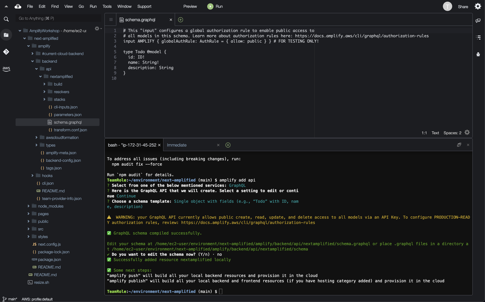

Add a GraphQL API to your app and automatically provision a database by running the following command from the root of your application directory:
amplify add api
Select the explicit values below to enable API key for public create, read, update, and delete access. We’ll add authentication later and update these permissions to provide more controlled access.
? Select from one of the below mentioned services: GraphQL
? Here is the GraphQL API that we will create. Select a setting to edit or conti
nue Continue
? Choose a schema template: Single object with fields (e.g., “Todo” with ID, nam
e, description)
⚠️ WARNING: your GraphQL API currently allows public create, read, update, and delete access to all models via an API Key. To configure PRODUCTION-READY authorization rules, review: https://docs.amplify.aws/cli/graphql/authorization-rules
✅ GraphQL schema compiled successfully.
Edit your schema at /home/ec2-user/environment/next-amplified/amplify/backend/api/nextamplified/schema.graphql or place .graphql files in a directory at /home/ec2-user/environment/next-amplified/amplify/backend/api/nextamplified/schema
✔ Do you want to edit the schema now? (Y/n) · no
✅ Successfully added resource nextamplified locally
✅ Some next steps:
"amplify push" will build all your local backend resources and provision it in the cloud
"amplify publish" will build all your local backend and frontend resources (if you have hosting category added) and provision it in the cloud
Notice that we responded no to the question “Do you want to edit the schema now?” This is because the Amplify CLI is not currently able to open files in the Cloud9 IDE, which is what we will want to do to edit the GraphQL schema in the next step.
On the left hand side of the Cloud9 IDE, locate the file browser and navigate to the file amplify/backend/api/nextamplified/schema.graphql

Replace the example Todo model in the schema with the following:
type Post
@model
@auth(rules: [{ allow: public, operations: [create, read, update, delete] }]) {
id: ID!
title: String!
content: String!
}
This schema defines a Post model for our blog app. You’ll notice a directive on the Post type of @model, which is part of the GraphQL transform library of Amplify and provides custom directives you can use in your schema that allow you to do things like define data models, set up authentication and authorization rules, configure serverless functions as resolvers, and more.
A type decorated with the @model directive will scaffold out the database table for the type (Post table), the schema for CRUD (create, read, update, delete) and list operations, and the GraphQL resolvers needed to make everything work together.
You’ll notice that for the @auth directive, we’re granting full CRUD capabilities for public access. We’ll update this later to make it a little more secure by incorporating authentication and user level access controls.
To deploy this backend, run the push command:
amplify push
When prompted with “Are you sure you want to continue?” respond with Yes to continue.
⠇ Fetching updates to backend environment: dev from the cloud.
⚠️ WARNING: your GraphQL API currently allows public create, read, update, and delete access to all models via an API Key. To configure PRODUCTION-READY authorization rules, review: https://docs.amplify.aws/cli/graphql/authorization-rules
✅ GraphQL schema compiled successfully.
Edit your schema at /home/ec2-user/environment/next-amplified/amplify/backend/api/nextamplified/schema.graphql or place .graphql files in a directory at /home/ec2-user/environment/next-amplified/amplify/backend/api/nextamplified/schema
✔ Successfully pulled backend environment dev from the cloud.
⠋ Building resource api/nextamplified
⚠️ WARNING: your GraphQL API currently allows public create, read, update, and delete access to all models via an API Key. To configure PRODUCTION-READY authorization rules, review: https://docs.amplify.aws/cli/graphql/authorization-rules
⠙ Building resource api/nextamplified✅ GraphQL schema compiled successfully.
Edit your schema at /home/ec2-user/environment/next-amplified/amplify/backend/api/nextamplified/schema.graphql or place .graphql files in a directory at /home/ec2-user/environment/next-amplified/amplify/backend/api/nextamplified/schema
> Current Environment: dev
┌──────────┬───────────────┬───────────┬───────────────────┐
│ Category │ Resource name │ Operation │ Provider plugin │
├──────────┼───────────────┼───────────┼───────────────────┤
│ Api │ nextamplified │ Create │ awscloudformation │
└──────────┴───────────────┴───────────┴───────────────────┘
? Are you sure you want to continue? Yes
⚠️ WARNING: your GraphQL API currently allows public create, read, update, and delete access to all models via an API Key. To configure PRODUCTION-READY authorization rules, review: https://docs.amplify.aws/cli/graphql/authorization-rules
✅ GraphQL schema compiled successfully.
Edit your schema at /home/ec2-user/environment/next-amplified/amplify/backend/api/nextamplified/schema.graphql or place .graphql files in a directory at /home/ec2-user/environment/next-amplified/amplify/backend/api/nextamplified/schema
⠋ Building resource api/nextamplified
⚠️ WARNING: your GraphQL API currently allows public create, read, update, and delete access to all models via an API Key. To configure PRODUCTION-READY authorization rules, review: https://docs.amplify.aws/cli/graphql/authorization-rules
✅ GraphQL schema compiled successfully.
Edit your schema at /home/ec2-user/environment/next-amplified/amplify/backend/api/nextamplified/schema.graphql or place .graphql files in a directory at /home/ec2-user/environment/next-amplified/amplify/backend/api/nextamplified/schema
? Do you want to generate code for your newly created GraphQL API Yes
? Choose the code generation language target javascript
? Enter the file name pattern of graphql queries, mutations and subscriptions src/graphql/**/*.js
? Do you want to generate/update all possible GraphQL operations - queries, mutations and subscriptions Yes
? Enter maximum statement depth [increase from default if your schema is deeply nested] 2
...
✔ Generated GraphQL operations successfully and saved at src/graphql
✔ All resources are updated in the cloud
During the push, the Amplify CLI will ask you some questions about your GraphQL setup and how you want it to work with the generated files locally. You can accept the defaults, but let’s look at what each of them represent.
Do you want to generate code for your newly created GraphQL API Yes
When we created the schema, we did so using the GraphQL transform library of Amplify, which allows us to specify the structure and features of our schema. This question will allow Amplify to then convert that into code that you can actually import into your project, so that you can more easily work with the generated resources.
Choose the code generation language target javascript
This option specifies which language you want the generated code to be in. Options include javascript, typescript,
Enter the file name pattern of graphql queries, mutations and subscriptions src/graphql/**/*.js
This option specifies the location of file name pattern for the files generated during the code generation step. You can update this for your specific needs, but the default is usually fine in most cases.
Do you want to generate/update all possible GraphQL operations - queries, mutations and subscriptions Yes
This just specifies whether you want to generate all or part of the code. For most operations, you can rebuild everything, but for very large schemas, you may select just the GraphQL operations that were changed to optimize code generation time.
Enter maximum statement depth [increase from default if your schema is deeply nested] 2
This refers to the depth the generated code will work with your schema. For example, if I have a model with a nested model, which also has a nested model, I would have a depth of 3, but if I specify 2 for my depth, I won’t be able to work with the third level during operations on the top level.
Now the API is live and you can start interacting with it!
The API you have deployed includes operations for creating, reading, updating, deleting, and listing posts.
Next, run the following command to check Amplify’s status:
amplify status
This will give us the current status of the Amplify project, including the current environment, any categories that have been created, and what state those categories are in. It should look similar to this:
> Current Environment: dev
┌──────────┬───────────────┬───────────┬───────────────────┐
│ Category │ Resource name │ Operation │ Provider plugin │
├──────────┼───────────────┼───────────┼───────────────────┤
│ Api │ nextamplified │ No Change │ awscloudformation │
└──────────┴───────────────┴───────────┴───────────────────┘
To view the GraphQL API in the AppSync console at any time, run the following command:
amplify console api
To view your entire app in the Amplify console at any time, run the following command:
amplify console